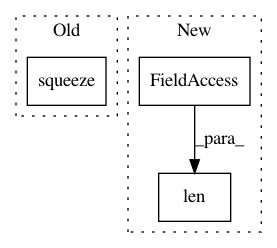

85e89ae2495998ae69ab34abf5400164f909a548,librosa/core.py,,cqt,#,435
Before Change
r_power = np.abs(scipy.signal.fftconvolve(y, filt, mode="same"))**2
cqt_power.append(feature.sync(r_power, samples, aggregate=aggregate))
return np.asarray(cqt_power).squeeze()
def logamplitude(S, ref_power=1.0, amin=1e-10, top_db=80.0):
Log-scale the amplitude of a spectrogram.
After Change
else:
samples = np.asarray([samples]).flatten()
cqt_power = np.empty((len(basis), len(y)), dtype=np.float32)
for i, filt in enumerate(basis):
cqt_power[i] = np.abs(scipy.signal.fftconvolve(y, filt, mode="same"))**2
In pattern: SUPERPATTERN
Frequency: 3
Non-data size: 3
Instances
Project Name: librosa/librosa
Commit Name: 85e89ae2495998ae69ab34abf5400164f909a548
Time: 2013-12-21
Author: brm2132@columbia.edu
File Name: librosa/core.py
Class Name:
Method Name: cqt
Project Name: keras-team/keras
Commit Name: c074416c9a0731c1f55c2f6ba200b4459dbcd4ba
Time: 2019-08-21
Author: francois.chollet@gmail.com
File Name: keras/wrappers/scikit_learn.py
Class Name: KerasRegressor
Method Name: predict
Project Name: statsmodels/statsmodels
Commit Name: f2319840b3ce1cc27e55727fed464b57cccf8276
Time: 2020-12-22
Author: B_R_L@hotmail.com
File Name: statsmodels/stats/weightstats.py
Class Name: DescrStatsW
Method Name: __init__